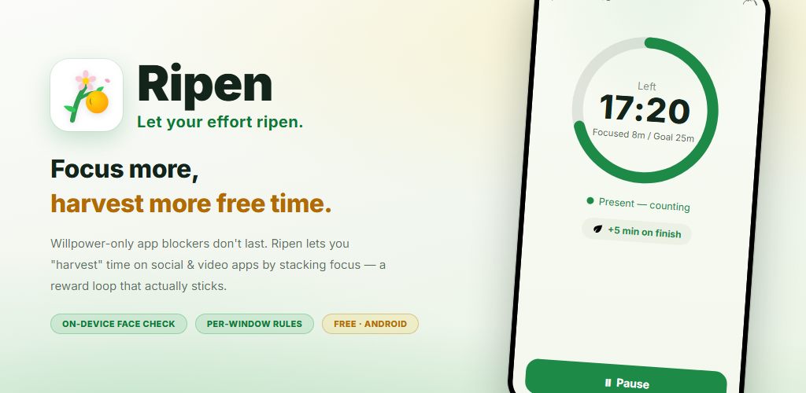
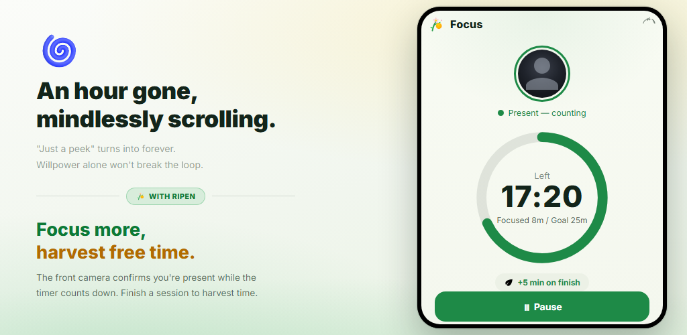
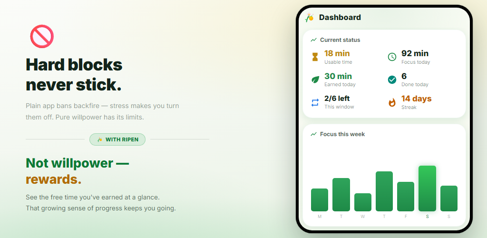
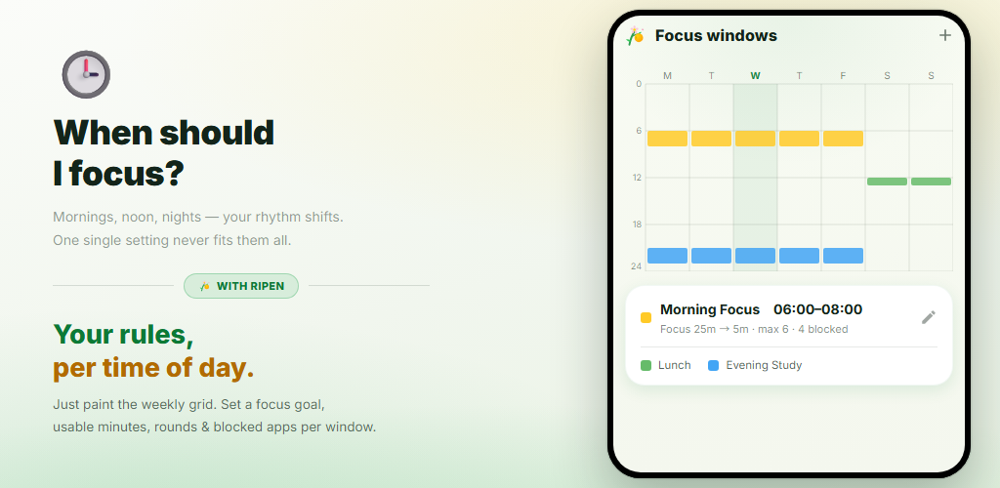
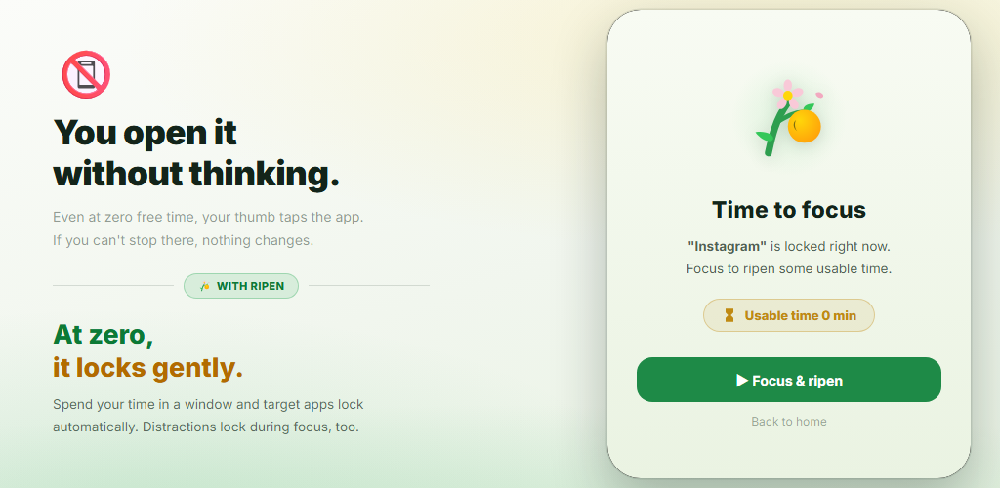
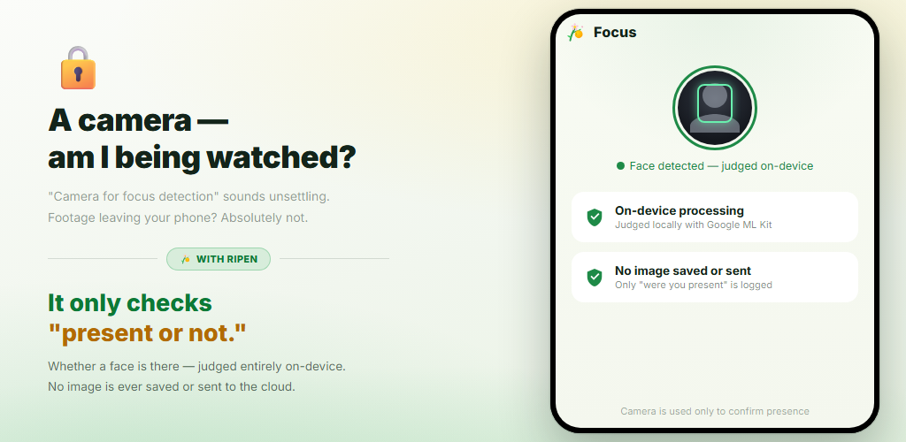

Beloningslus
Elke keer dat je een focustimer voltooit, verdien je tijd voor social media en video-apps. Beloningen, geen wilskracht, veranderen je gedrag.
App-blockers die alleen op wilskracht draaien, houd je niet vol. Ripen is een gewoonte-app met beloningen: hoe meer je focust en studeert, hoe meer tijd je „oogst” voor social media en video-apps. De aanwezigheidscontrole met de camera werkt op je toestel, en je kunt hem per tijdvak uitzetten.
Android 8.0+ · Gratis · Geen advertenties · Geen account nodig

Geen ingewikkelde instellingen. Je bepaalt alleen wanneer je focust, hoe lang, en hoeveel tijd je terugkrijgt.
Kleur het weekrooster in om de dagen en uren te kiezen waarop je wilt focussen
Met de aanwezigheidscontrole aan bevestigt de frontcamera dat je er bent terwijl de timer aftelt
Elke voltooide ronde levert de ingestelde minuten op (een woordquiz kan ook)
Bij 0 minuten over worden de gekozen apps zachtjes geblokkeerd
In tijdvakken met aanwezigheidscontrole loopt de focustimer alleen door zolang je gezicht voor het scherm is. Haal je doel en je verdient de ingestelde minuten voor social media of video. Rondes die je voortijdig stopt, leveren niets op.

Zie in één oogopslag je bruikbare tijd, focus vandaag, verdiend vandaag en je reeks dagen. Week- en maandgrafieken en een heatmap per uur laten zien wanneer je het best focust.

Kleur gewoon het weekrooster in om de dagen en uren te kiezen waarop je wilt focussen. Elk tijdvak heeft een eigen focusdoel, minuten per ronde, rondelimiet, geblokkeerde apps en aanwezigheidscontrole met de camera. Buiten de tijdvakken ben je vrij.

Heb je de tijd van een tijdvak opgebruikt, dan verschijnt er een blokkeerscherm als je een gekozen app opent. Ook tijdens focussessies gaan afleidende apps op slot. Een „instellingenslot” voorkomt dat je de regels later versoepelt.

Een gewone timer telt gewoon door als je wegloopt. Ripen gebruikt de frontcamera alleen om te beoordelen of er een gezicht voor het scherm is — op je toestel. Er wordt geen beeld opgeslagen of verzonden. Je kunt ook tijdvakken zonder camera kiezen.

Bekijk hoe je focust, tijd oogst en hoe je apps op slot gaan zodra die op is. (De video is in het Engels.)
Keer „ik wil stoppen, maar het lukt niet” om — met beloningen.
Elke keer dat je een focustimer voltooit, verdien je tijd voor social media en video-apps. Beloningen, geen wilskracht, veranderen je gedrag.
De frontcamera beoordeelt alleen of je voor het scherm zit. Alles wordt op je toestel verwerkt en er wordt geen beeld opgeslagen of verzonden. Je kunt hem per tijdvak uitzetten.
Stel meerdere tijdvakken in per dag en tijd. Elk tijdvak heeft een eigen focusdoel, minuten, rondelimiet en geblokkeerde apps.
Beantwoord een ingesteld aantal Engelse woordvragen (4 keuzes) goed om een ronde te verdienen. Ongeveer 10.000 woorden per CEFR-niveau, met niveautest, herhaallijst en eigen woordsets.
Minuten die je direct bij de start van een tijdvak kunt gebruiken — nog voordat je focust. Ze komen bovenop je focusbeloningen.
Een commitmentfunctie die voorkomt dat je aan de instellingen sleutelt voor meer vrije tijd. Versoepelingen vereisen dat je een ontgrendeling plant en 1–30 dagen wacht.
Focustrends, een focuskalender, voltooiingspercentage, je beste focusuren en het gebruik van geblokkeerde apps — alles in beeld.
Zonder de app te openen toont een vaste melding je bruikbare tijd, het volgende focusvenster en de resterende tijd van je sessie. Bij voltooien klinkt een geluid en trilt je telefoon.
Kies een systeem-, licht of donker thema. De app is beschikbaar in 12 talen, waaronder Engels en Japans.
„Een camera om je focus te controleren” klinkt misschien zorgwekkend. Ripen is ontworpen met privacy op de eerste plaats.
Gezichtsdetectie draait op je toestel met Google ML Kit. Beelden worden nooit naar een externe server gestuurd.
Er wordt alleen beoordeeld of er een gezicht is. Foto’s en video’s worden nooit opgeslagen of verzonden. Er wordt alleen bijgehouden hoeveel seconden je aanwezig en gefocust was.
Focusgegevens en instellingen worden op je toestel bewaard en nooit naar de servers van Ripen gestuurd. Als Android-back-up aanstaat, zitten je instellingen in de back-up van je Google-account en worden ze teruggezet als je de app opnieuw installeert.
Geen registratie of inloggen, en geen advertenties of analysetools. Download de app en begin meteen.
Download via Google Play